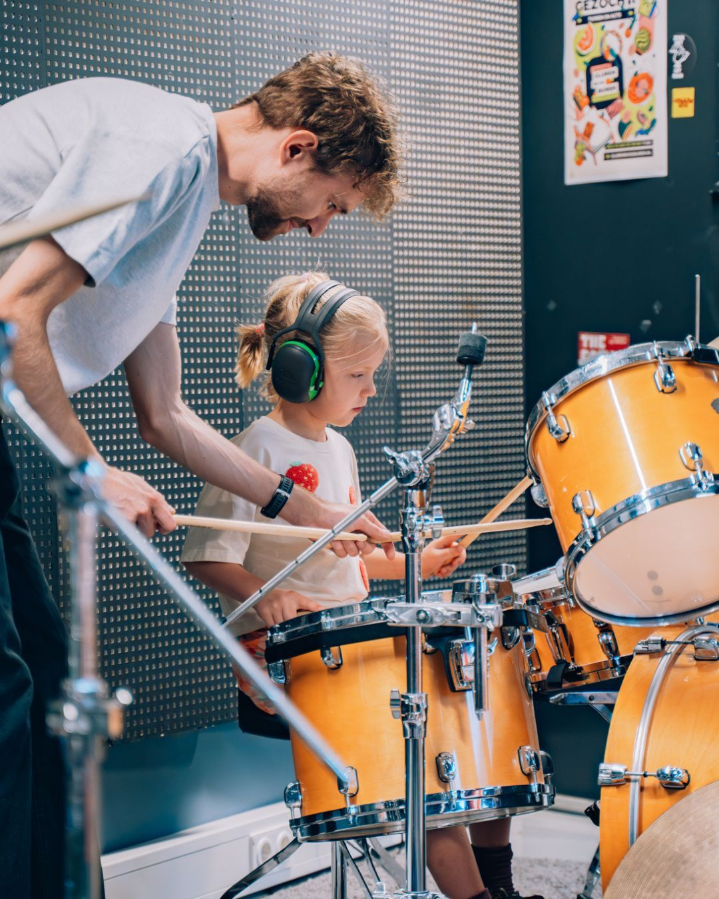

Beginner
Get comfortable with your instrument and first musical ideas.
From your first chord to a confident performance. Choose a pathway and make it your own.
Each course blends foundations, creative practice and personal expression.
Chords, riffs and your favourite songs.
Explore details ↗
Melody and harmony, one key at a time.
Explore details ↗Find confidence in your signature voice.
Explore details ↗
Feel the groove and build a steady beat.
Explore details ↗Get comfortable with your instrument and first musical ideas.
Refresh the foundations and rebuild your confidence.
Work on expression, technique and personal goals.
Build reliable habits.
Listen, interpret and express.
Play music you connect with.
Track your next small win.
Tilt the spotlight card or browse pathways across guitar, vocals and rhythm.
Start with the music you enjoy. Each detail page explains the skills and activities in that pathway.
Open the student dashboard and select Enrol in a batch to see illustrative timings and fees.
Instrument availability is not verified in this concept. Confirm requirements with the academy before a real booking.
Explore a pathway or tell us what you would like to learn.